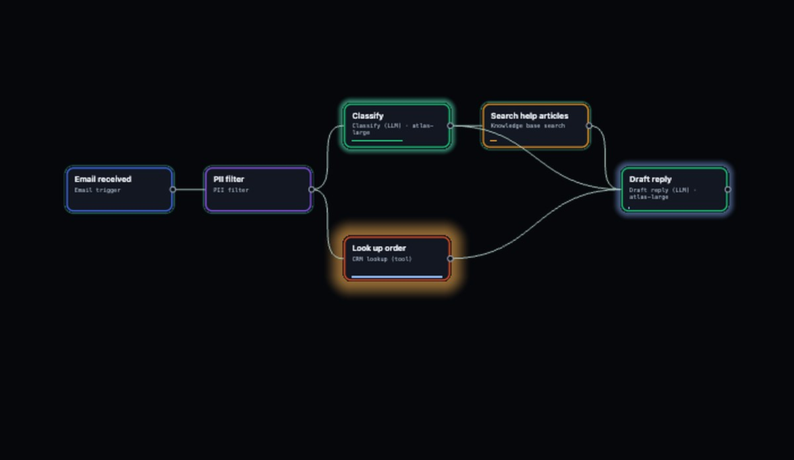
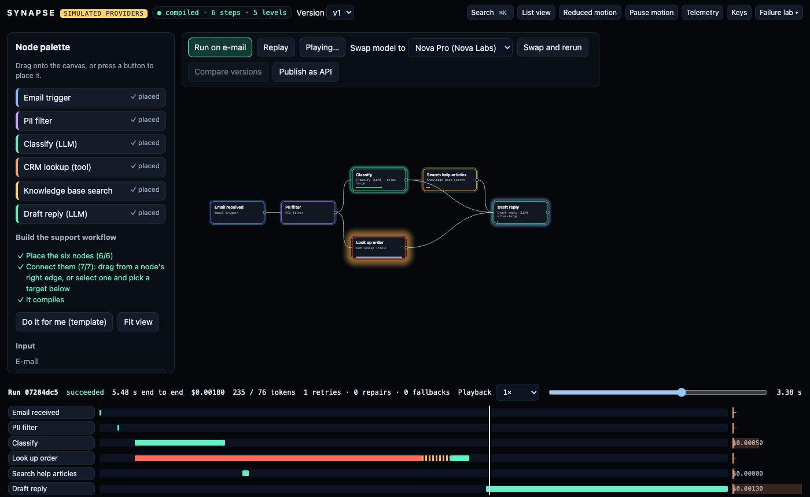
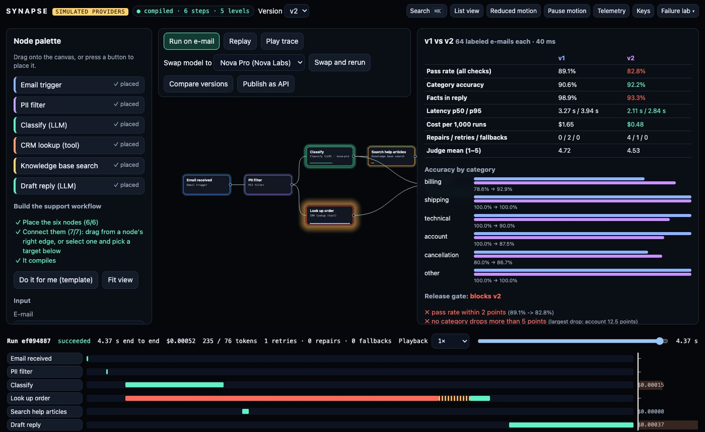
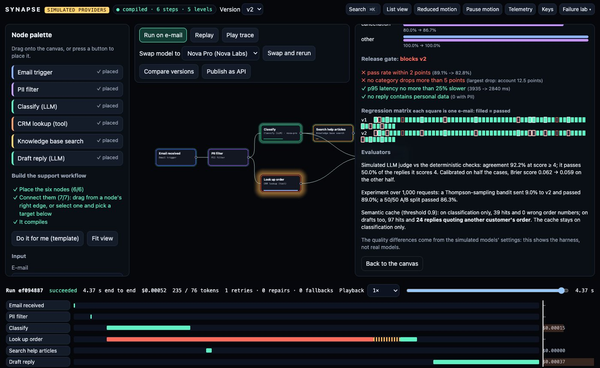
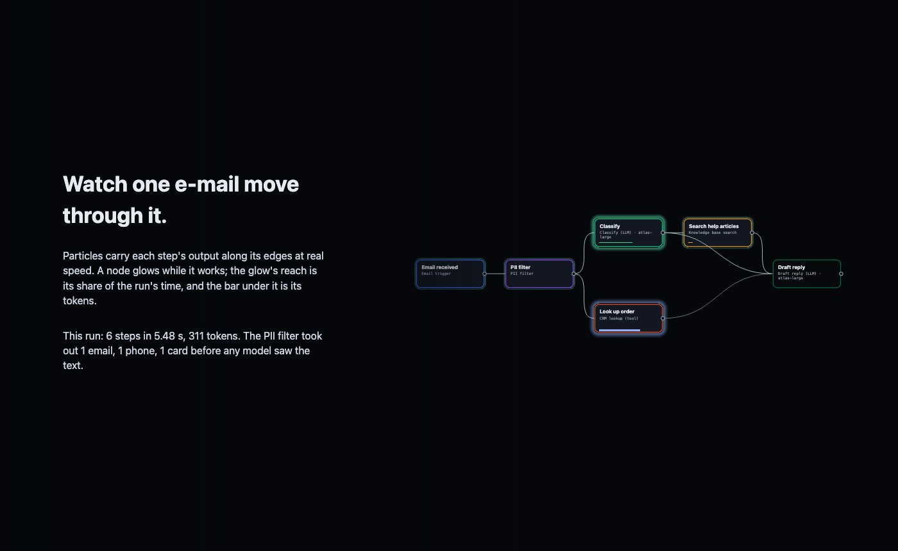

TypeScript · three.js · LLM ops · 2026-10
Is the Cheaper Model Good Enough to Ship?
A visual agent builder where execution traces move through the graph: a six-node support workflow run on a sample e-mail, a tool timeout you can open and inspect, a provider swap that is 71% cheaper and classifies slightly better, and a release gate that still blocks it because the end-to-end pass rate falls from 89.1% to 82.8%.

Built from blueprint 02 of a written build book (Volume V, motion-first products) as one vertical slice. The providers are simulated: the four models and their price list, the CRM tool, the knowledge base and the labeled e-mails are deterministic simulators in the repository, and nothing calls a real language model. The quality differences the evaluation measures are the ones written into the simulator, so the comparison shows the harness working, not which model is better. Not built: real providers, Temporal, Kafka, Redis, pgvector, Vault, subgraphs and multi-user editing, single sign-on, billing, Terraform and cloud deployment.
01 — The problem
A support team runs an agent: classify the e-mail, look up the order, search the help articles, draft a reply. Someone proposes moving every call to a cheaper provider. It is faster and cheaper, and on a spot check it classifies just as well. Is it good enough to ship, and how would anyone know before customers do?
Agent systems are hard to debug once several models, tools and retries are involved, because nobody can see where a request went. The build book's rule for this volume is that the public site is the product: the trace has to be visible on the graph itself. Blueprint 2 of ten, built as its demo scenario end to end.
02 — What I built
A Next.js site that runs the whole agent runtime in the browser, plus a Fastify API on PostgreSQL that runs, stores and streams the same traces, started by one docker compose up.
- A spatial canvas in three.js: nodes as one instanced draw with a glow shader, edges and execution particles as one draw each, zoom that reveals detail, and spring-linked dragging.
- A compiler that produces a deterministic plan and refuses any path from the e-mail to a model that skips the PII filter.
- A runtime on a virtual clock with retries, backoff, JSON repair, fallback models, a router and a semantic cache, keeping secrets and personal data out of every trace.
- Simulated providers with an invented price list, latency, accuracy and failure rates.
- An evaluation suite over 64 labeled e-mails, a release gate, a calibrated judge, a bandit and a publish step that creates an API endpoint.
03 — How it was built
- 01
Six nodes and a compiler with a policy
The workflow is an e-mail trigger, a PII filter, a classifier and an order lookup in parallel, a help-article search, and a reply drafter. Built from an empty canvas it compiles to 6 steps in 5 levels. The compiler sorts with a fixed tie-break, so the same graph always gives the same plan and hash (snapshot-tested). It refuses cycles, wrong arities, missing models and inline credentials, and any path where a model could see the raw e-mail.
if (NODE_SPECS[n.type]?.kind === "llm") issues.push({ code: "pii_unfiltered", ... }); if (n.type !== "policy.pii") stack.push(...outs.get(id)!); // walk on until a PII filter stops the path - 02
A run you can watch
On the sample e-mail the PII filter removes 1 e-mail address, 1 phone number and 1 card reference, and the run takes 5.48 s for $0.00180. The runtime computes the whole trace on a virtual clock. The canvas then plays it at real speed: particles cross each edge during its 150 ms hand-off, a node glows while it works, the glow's reach is its share of the run's time, and the bar under it is its tokens. The waterfall and cost flame chart below follow the same clock, and a deep link to any millisecond redraws the same frame.
- 03
The failed tool step
The order lookup timed out after 2.50 s. The runtime waited 250 ms, retried, and got an answer in 163 ms; classification ran in parallel, so only the draft waited. Clicking the step opens it out of the node: every attempt, its wait and its result. The CRM credential is a
secret://reference resolved inside the runtime. Tests check that its value appears in no trace, stored row or response. - 04
Swap the provider, then measure
v2 sends every call to Nova Pro and falls back to Nova Lite. On 64 labeled e-mails (including 4 near-duplicates with a different order number) it is 71% cheaper ($0.48 against $1.65 per 1,000 runs) and 28% faster at p95. It even classifies slightly better: 92.2% against 90.6%. But its drafts leave out the order number more often (93.3% of facts against 98.9%), and it needed 4 JSON repairs. End to end, the pass rate falls from 89.1% to 82.8%, and the account category drops 12.5 points.
- 05
A gate, a judge and a cache that would have lied
The release gate allows a 2-point drop in pass rate and a 5-point drop in any category, so it blocks v2, and publishing it is refused with those reasons. A simulated LLM judge agrees with the deterministic checks 92.2% of the time, yet only half the replies it scores 4 actually pass; calibrating it lowers its Brier score from 0.062 to 0.059. A semantic cache on classification gives 39 hits and no wrong answers. Extended to drafts, it gives 97 hits and 24 replies quoting another customer's order.
{ name: "no category drops more than 5 points", ok: drops[0][1] <= 0.05, detail: `largest drop: ${drops[0][0]} ...` } - 06
Failures that recover
In the failure lab, Atlas AI goes down: both of its models fail every retry, the run fails, and the canvas shows where. Switching to the router recovers it: the router skips the unhealthy provider and picks Nova Pro on quality, cost and latency. A rate-limit storm makes every model call wait 1 s and retry. Reduced motion jumps runs to their final state with every number still shown, and a list view carries the graph and the trace as tables.
- 07
The same runtime behind an API
In Docker the same site runs workflows on a Fastify API. It has organisation-scoped tokens and roles, row-level security, credentials encrypted with AES-256-GCM, idempotency keys, a hash-chained audit log, OpenAPI 3.1, OpenTelemetry spans and a WebSocket that replays a stored trace. Replay returns identical step ordering. Publishing v1 creates an endpoint whose key is shown once and stored hashed. Another organisation gets 404 on every Acme workflow and run.
04 — Results
The demo. A run playing on the canvas: classification finished, the order lookup still inside its 2.50 s timeout, the waterfall filling in below:

The failed tool step, opened out of its node:
The two versions on 64 labeled e-mails, and the gate:

| v1 | v2 | |
|---|---|---|
| Pass rate | 89.1% | 82.8% |
| Classify | 90.6% | 92.2% |
| p95 | 3.94 s | 2.84 s |
| $ / 1,000 | 1.65 | 0.48 |

The story chapters that hand over to the builder:

Checks. 38 unit and API tests (domain and motion code at 98.8% statement coverage): compiler snapshot and determinism, byte-identical replay, failure injection for 429, 500 and timeouts, no secret in any trace, and cost reconciliation (run total = sum of steps = price list × tokens). Every API response is validated against the OpenAPI document; tenant isolation and the authorization matrix are tested. 7 Playwright journeys walk the scenario from an empty canvas to a published endpoint, plus reduced motion, keyboard-only, outage recovery and a 2,000-node stress test.
Performance. 60 FPS with a real GPU (p95 frame 16.8 ms, 3 draw calls). 2,000 nodes and 5,000 edges on software rendering: 14 FPS and still 3 draw calls, a floor. The API on one process: 1,137 requests a second with 0 errors, full persisted runs at p95 80 ms, and 1,000 trace streams at once.
Watch the 2 min 9 s captioned recording of the whole scenario.
05 — What I'd do next
- Gate on cost and latency together with quality, as a budget, so a cheaper version that is only slightly worse can pass with a sign-off.
- A stricter prompt for the drafting step on Nova Pro, re-evaluated on the same 64 e-mails, to see whether the fact recall gap closes.
- Subgraphs and reusable components, and multi-user editing with presence on the canvas.
- Real provider adapters behind the same interface, with the simulator kept for tests.